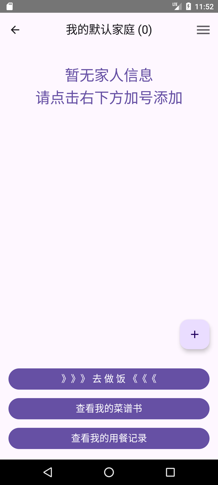
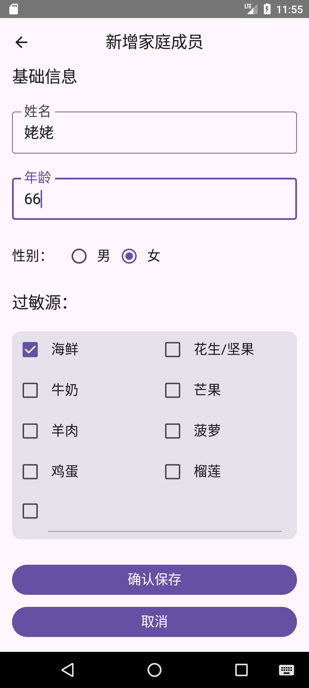
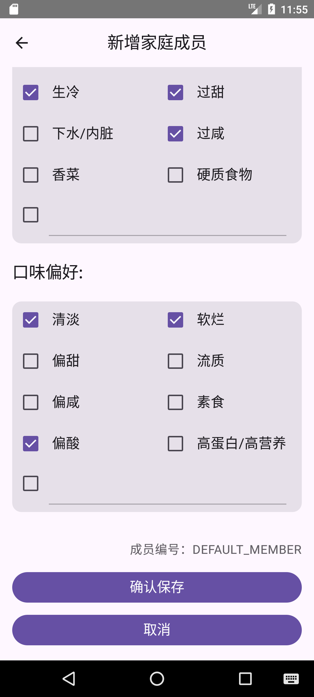
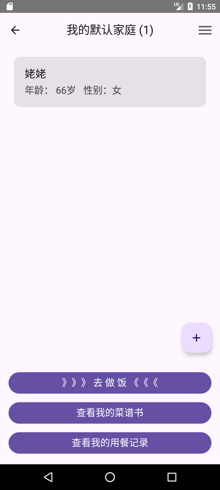
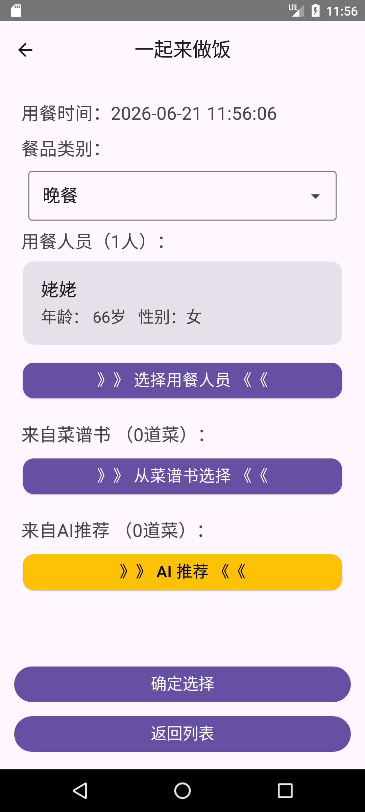
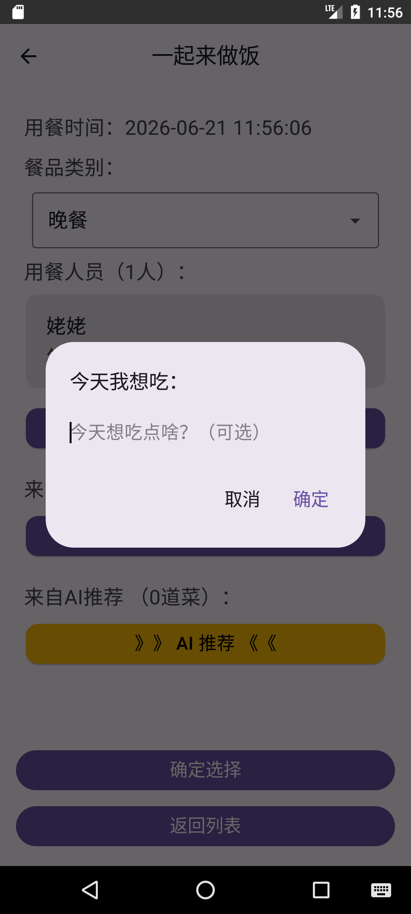
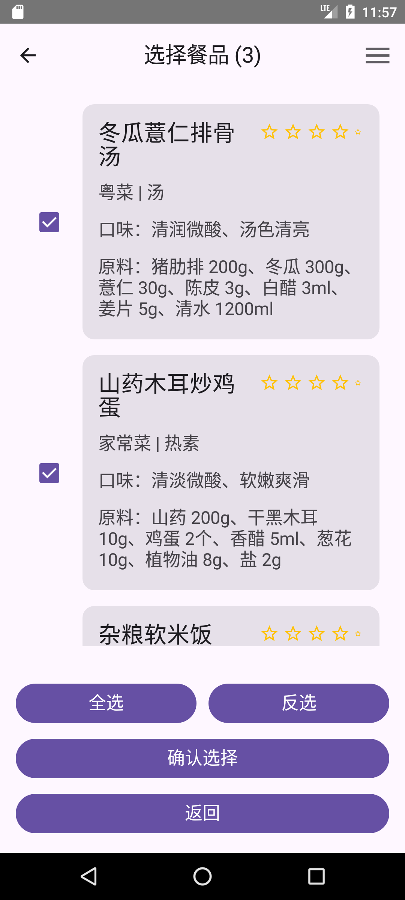
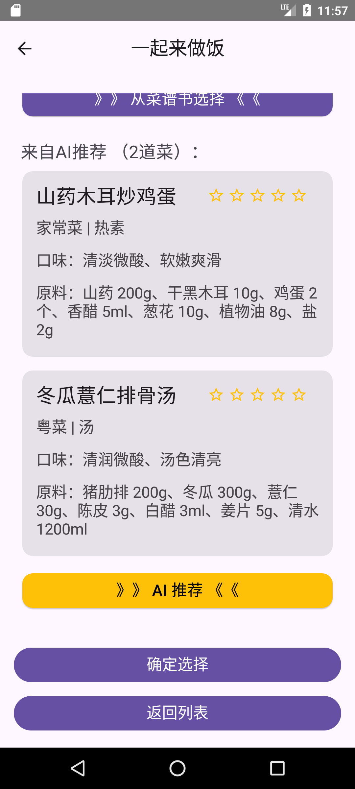
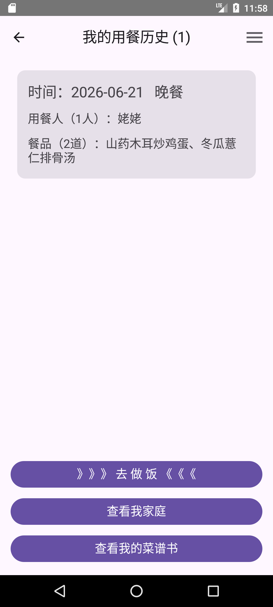
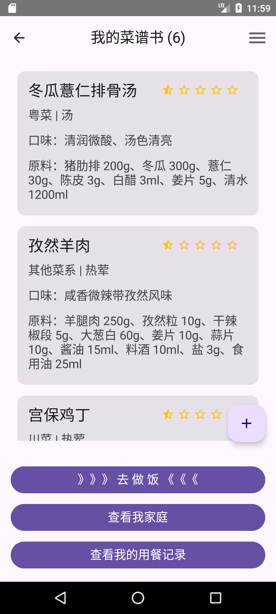

1
Open My Family and Tap + to Add a Member
After logging in, open the home screen and tap the plus button to create health profiles for your family members.
Starting from the home screen after login, this guide shows you how to add member profiles, plan meals with AI recommendations, save meal records, and add your own dishes to the cookbook.
Follow these steps to add members, get AI dish recommendations, and save your meal records.

After logging in, open the home screen and tap the plus button to create health profiles for your family members.

Enter the member's basic details, health information, dietary restrictions, and taste preferences.

Check the information and tap Save to store the member's profile in the app.

Return to the home screen and tap Make a Meal to start planning your meal.

Choose breakfast, lunch, dinner, or a snack, then select the people who will be eating.
Then tap >> AI Recommendations << to let the app suggest dishes based on the profile information.

Enter ingredients, flavors, or a simple request, then tap Confirm.
Your AI Chef needs some time to plan the dishes. Please wait while it prepares your recommendations.

Once AI finishes generating recommendations, the suggested dishes will appear in the list.
Choose suitable dishes for this meal from the recommendations, then tap Confirm.

Review your selections and tap Confirm to save this meal so you can find it in your meal history later.

To add your own dishes, tap View My Cookbook to open the dish management page.

Tap the plus button on the cookbook page and enter the dish details to save your family's regular dishes in your own cookbook.
For your first try, add one member and a few regular dishes, then explore AI recommendations.
Tap the button on your Android phone to download and install the app, then follow the guide to register and get started.

Android 6.0 or later · Follow your phone's prompts to allow the first installation